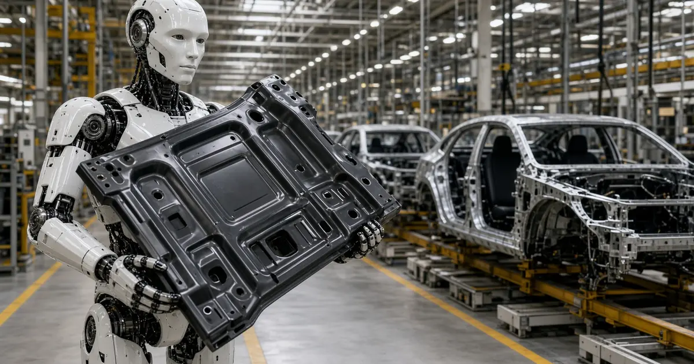
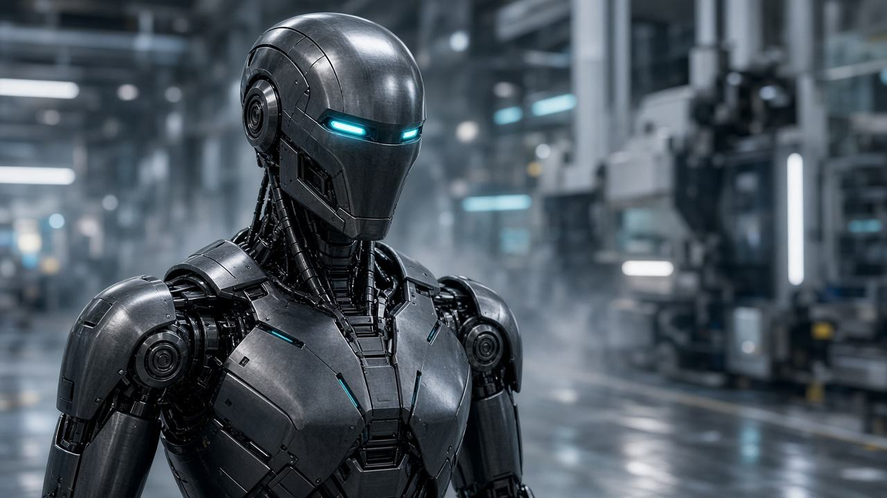
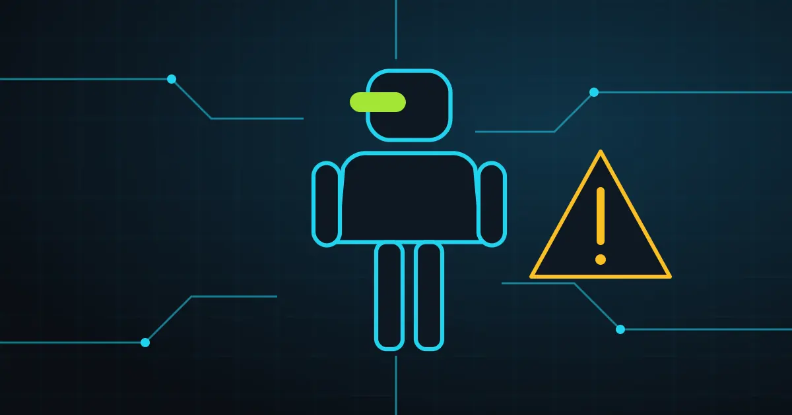

Tesla
Tesla pushes external Optimus deliveries to late 2027
Tesla now targets the end of 2027 for delivering Optimus humanoids to outside customers, citing unsolved problems with the hands, durability and AI.

Independent, answer-first news on humanoid robots: Tesla Optimus, Figure, Agility, Boston Dynamics, Unitree, 1X and more.
Read the latestRSS feedAI-generated image

Tesla now targets the end of 2027 for delivering Optimus humanoids to outside customers, citing unsolved problems with the hands, durability and AI.

Salling Group's Føtex chain is trialling humanoid robots built on Unitree hardware and HIVE Robots software to restock shelves after closing.

NVIDIA announced new Isaac frameworks, simulation pipelines and data, plus a humanoid reference platform from Agile Robots built on Isaac GR00T.

Korean regulators relaxed rules written for stationary industrial robots, clearing the way for 20 Robros humanoids to work in factories.

San Francisco start-up Minerva Humanoids emerged from stealth with about $10 million led by General Catalyst for its semi-autonomous humanoid, Roger.